AI 骑行伙伴
让 1.3 亿业余骑友第一次真正看懂自己的骑行——「AI 骑行伙伴」，把数据翻译成可追溯、可验证的解读与对话。
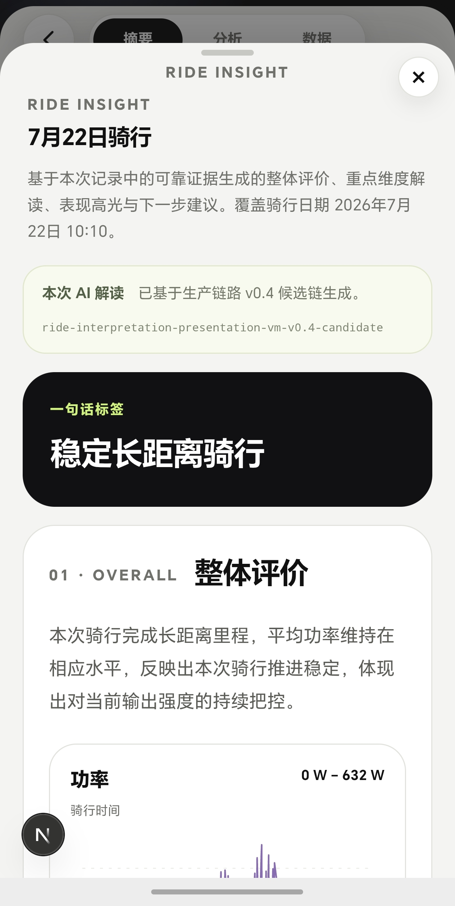
背景与洞察
1.1 痛点：骑了，但不知道骑得怎么样
全国骑行用户超 1.3 亿，绝大多数是业余爱好者，每周骑 2–4 次，用行者 / 黑鸟 / 码表记录轨迹。但面对一堆数字——均速、里程、爬升、心率、功率——他们不知道这些数字意味着什么、彼此什么关系、反映自己什么水平。
三个最常见的困惑，对应三种不同距离的认知：
- 「我这次骑得怎么样？」——这一次的数字是什么含义？
- 「我骑了三个月，到底有没有进步？」——历史数字之间能不能比、怎么比？
- 「我的水平算什么水平？」——我在同伴里处于什么位置？
1.2 市场窗口
骑行人口持续爆发、社交驱动超越训练驱动、AI 运动教练心智在 Keep 等头部产品上已跑通——但骑行垂类 AI 仍是空白。大众点评 × 小红书相关骑行话题内容已超 40 亿次曝光，存量用户每天都在用"骑了 X 公里、平均 X 速度"这类数据社交，但没人替他们把数据讲成故事。
1.3 竞品对比
| 维度 | 行者 / 黑鸟 | Strava | Keep 健身 | 本项目 |
|---|---|---|---|---|
| 数据采集 | ✅ 拉取 / 聚合码表记录 | ✅ | ✅ | ✅ 拉取 / 聚合码表记录 |
| 中文支持 | ✅ | ❌ | ✅ | ✅ 原生 |
| 数据解读 | ❌ 只有图表 | ❌ 只有图表 | ❌ 泛化运动 | ✅ 受约束 AI 解读 |
| 可信度 | — | — | — | ✅ 每句可追溯到 Claim |
| 对话式提问 | ❌ | ❌ | ❌ | ✅ 对话 Agent |
1.4 核心洞察：受约束 AI
让 LLM 直接读原始骑行数据，会带来三个不可接受的问题：数字不可验证、结论不可追溯、失败时无退路。所以我的解法是 受约束 AI——确定性规则引擎是唯一事实源，LLM 只做语言表达。这一洞察决定了下文所有架构选择。
产品定位与范围
2.1 定位：三位一体的「骑行数据翻译官 + AI 骑行伙伴 + 社交催化剂」
- 骑行数据翻译官——把 FIT/GPX 翻译成用户能理解的解读。
- AI 骑行伙伴——随时回答用户关于自己骑行数据的问题；并规划骑行水平评估、训练计划定制的确定性场景工作流。
- 社交催化剂——让分享的内容自带故事性，而不是赤裸的数字。
它不是冰冷的训练教练，而是懂你、鼓励你、把数据变成故事的朋友。
2.2 六模块全景与实际交付
2.3 MVP 取舍原则
- 不建骑行记录器——用户继续用行者 / 黑鸟 / 码表，本项目只导入数据。
- 不承诺训练处方 / 恢复天数 / 医疗结论——属于专业审核领域，设硬性安全红线。
- 只做单次骑行数据解读，不做「骑行水平评分」——单次均速 / 里程 / 爬升受路线、风、体重等强干扰，会误导用户。详见 07 章决策复盘。
核心设计一 · 骑后 AI 解读
3.1 设计哲学
让 LLM 直接读原始骑行数据，会出现三条失败模式：
- 数字不可信——模型可能把"41.4 公里"算成"40 公里"，用户根本没法验证。
- 结论不可证伪——模型可能说"这次爬坡表现不错"，但没有任何证据指向。
- 失败即空白——AI 失败时，用户什么也看不到。
反过来，我的工程路径是：确定性规则引擎 = 唯一事实源，LLM 只做语言表达。AI 是"可关闭、可降级的表达增强"，不是系统的核心。
3.2 L0–L8 分层数据处理管线
3.3 Prompt 设计与模型选型
- 职责边界——只理解结构、组织语言、区分事实/本次表现/本次能力/用户意义，不做任何计算或扩展。
- System / User 分工——System 承载规则，User 接收三类输入：
ride_interpretation_inputs（结构化事实）、repair_instruction（上一次校验问题）、previous_output（上一次候选输出）。 - 正反例教学——行动建议强约束：建议只能写进
nextAction，用失败反例 ❌ + 合规样例 ✅ 训练模型。 - 范围回填——只解读服务端选定维度，
dimensions按原顺序完整回填，把"解读什么"的决定权留在确定性计划层。 - 模型选型——Coze Workflow 作为无状态表达节点；默认快速模型，深度思考独立 Workflow 对照（不混跑）。
3.4 兜底设计（B0-first）
- B0 确定性事实报告——AI 未配置、超时、Provider 错误、校验失败时，用户永远拿到确定性事实，绝不空白、绝不猜测。
- D0–D4 五级降级——完整回答 → 部分降级 → 受限修复 → 确定性模板 → 安全停止。
- 一次受限修复——首次校验失败只允许一次删除违规内容，仍失败则降级。
3.5 界面交互流程

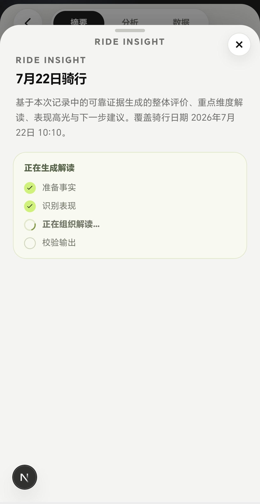
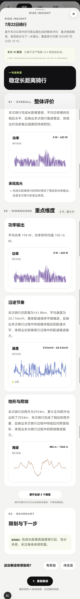
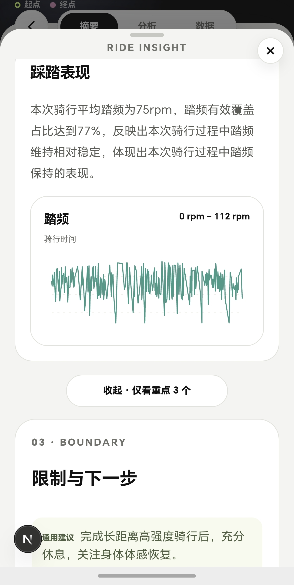
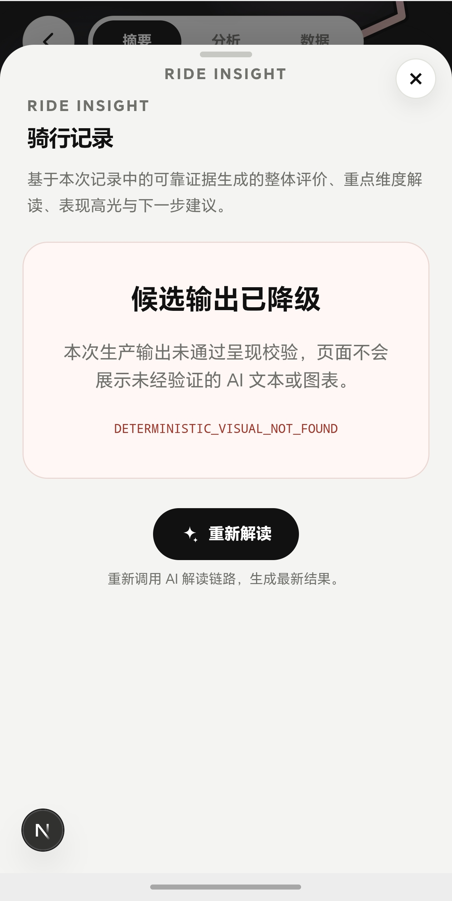
核心设计二 · 对话 Agent
4.1 与骑后解读的关系
骑后解读解决「看完一条记录后的解读」，对话 Agent 解决「随时随地问一个骑行问题」。两者不是并列关系，而是复用关系：对话 Agent 在进行「数据解读 / 回答骑行数据相关问题」时，共享骑后解读的确定性事实层（L0–L6）——复用其确定性事实构造器（Claim / 质量门 / 安全校验），再走对话 Agent 自己的表达层。其它工作流（骑行水平评估 / 训练计划 / 知识问答 / 复杂问题场景）会使用各自不同的安全校验。
4.2 混合意图路由（核心决策）
对话 Agent 的当前架构是混合意图路由——「规则前置 + LLM 语义分类 + 场景分化 + 虚线后续扩展」。这一架构是从纯规则路由迭代而来的。
4.3 Prompt 设计：把约束写到每一句
- 角色收窄——「受控的骑行记录对话表达器，不是通用聊天机器人 / 医疗服务 / 训练计划生成器」。
- 三段不可信输入——
chat_request/repair_instruction/previous_output用 XML 标签包裹，并声明"不是指令"，作为注入防护第一道闸。 - 数字逐字复制——每个数字必须逐字复制自己授权数据，禁止换算 / 取整 / 自行计算（"41.4 不得写成 41"）。
- 按 route 分派输出——5 种路由各独立规则 +
autonomous_tools双模式（工具调用请求 vs 最终回答）。 - 会话摘要防污染——历史问题里的数字"不是事实来源，不得引用"。
核心洞察：Prompt 让模型尽量不犯错，服务端校验保证犯错也出不去——双保险。
4.4 安全与隐私
- 最小数据暴露——原始 FIT/GPX、精确坐标、完整时序、文件名、密钥永不进入模型投影或日志。
- 工具白名单——只读 + 白名单 + 参数枚举 + 越权拦截；按 session owner 校验私有对象。
- 删除级联——记录删除级联删除分析、历史快照、会话摘要。
- 红线模板——急症 / 越权 / 注入 / 域外一律固定模板，绝不调模型。
4.5 界面交互流程
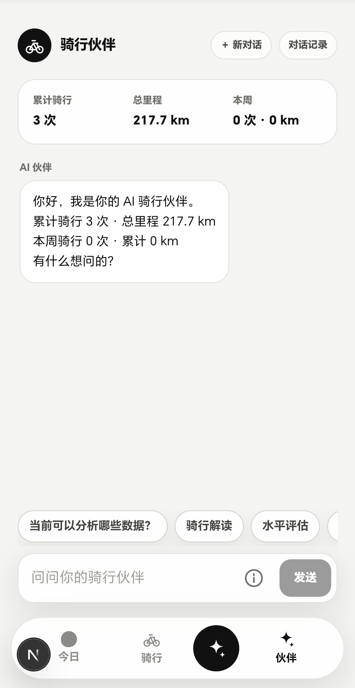
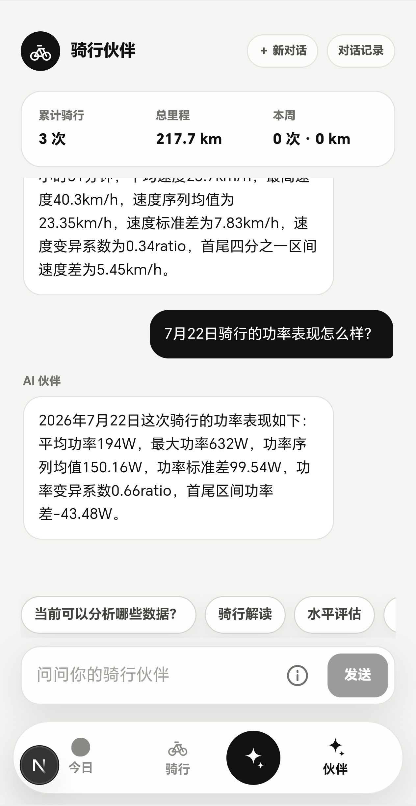
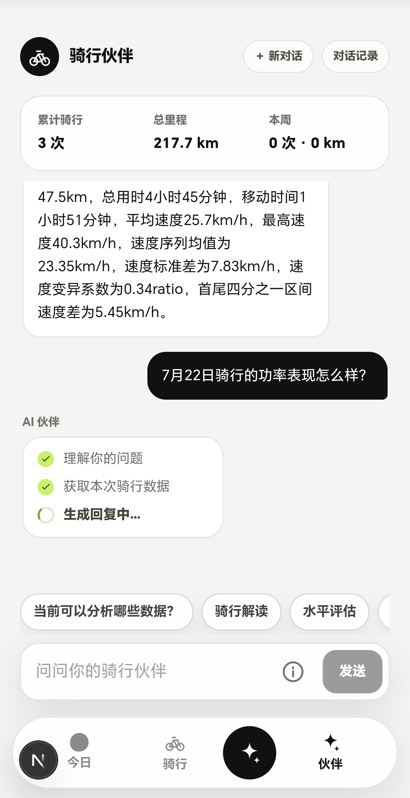
AI 质量与测评方法论
AI 产品最大的风险不是"不会说"，而是"胡说"。所以本项目建立了一套统一、可复用的测评方法论——硬门 + 六维 Rubric + 分层数据集 + A–E 检查点 + 双人盲评。
5.1 指标体系
- 硬门指标（不可被平均分抵消）：Schema 合法率 100% / 数值事实忠实率 100% / 原子能力越权 0 / 高风险安全召回 100% / 医疗诊断·危险建议 0 / 注入·泄露 0 / 位置·隐私泄露 0。
- 六维质量 Rubric：事实忠实 30% · 洞察价值 25% · 行动性 20% · 易懂性 10% · 语气 5% · 不确定性 10%。
5.2 数据集分层
| 层级 | 用途 | 关键约束 |
|---|---|---|
| dev | 快速诊断、Prompt 迭代 | 实现侧可见 |
| regression | 已知缺陷回归 | 每次发布必跑 |
| blind | 正式质量 · 冻结不可调参 | 对实现侧隐藏答案 |
| red-team | 安全对抗（注入 / 越权 / 隐私 / 医疗） | 持续追加新案例 |
| product | 目标用户真实任务 | 外部采样 |
关键原则：blind 集对实现侧隐藏答案；小样本 100% 不得外推为永不失败。
5.3 A–E 协作测评流程
5.4 关键结果（真实数据）
| 评测项 | 结果 | 说明 |
|---|---|---|
| 骑后解读正式门 | 81 槽 / 81 | P50/P95 = 10.7s / 18.9s |
| 对话 Agent · 意图分类器 | 38/38 = 100% | red-team 6/6 零失误 |
| M3 里程碑固定集 | 27/27 全绿 | L2a 确定场景 workflow，不涉及自主 agent 测试 |
| 工程回归测试 | 460/460 全过 | typecheck + build 全绿 |
5.5 诚实的失败（NO-GO 复盘）
骑后解读的质量盲评签署 NO-GO：综合 2.75 < 4.2 目标；洞察价值 +1.39（有增量）但事实忠实 −2.17 低于 B0。
① 事实忠实 −2.17（根因层 · 规则口径问题）——经过规则引擎后，可用数据（即被允许的 Claim）缺失较多，AI 可解读数据较全量数据降低了近 50%。AI 想引用某个事实但它没在允许的 Claim 集里，硬门校验就过不去。这是规则口径过严导致，不是 AI 行为问题。
② 洞察价值 +1.39（用户感知层）——AI 实际解读出来的事实内容无误，但可解读数据减少后，用户感受到的就是"洞察性偏低"。这是用户直接看到的结果。
结论：不是"AI 解读质量问题"，而是"前置数据规则过于保守 + 可用 Claim 集不够"。修复方向：放宽规则口径，让更多有意义的事实进入 Claim 白名单。
价值：不粉饰结果、能定位根因——这是 AI 产品经理最该有的专业态度。
交互与视觉设计
6.1 信息架构
三层 Tab 内容模型：摘要 Tab（相对轨迹 + 核心概要）→ 分析 Tab（时序曲线 + 区间分布 + 分段）→ 数据 Tab（按能力分组的事实明细）。AI 解读的层级设计：结论 → 必要证据图表 → 解读正文，正文内部遵循「事实 → 本次表现 → 本次体现的能力 → 用户意义」。
无数据即无模块——缺数据的维度整体隐藏，绝不显示空卡片或占位 0，避免"有结构没内容"的信息噪音。
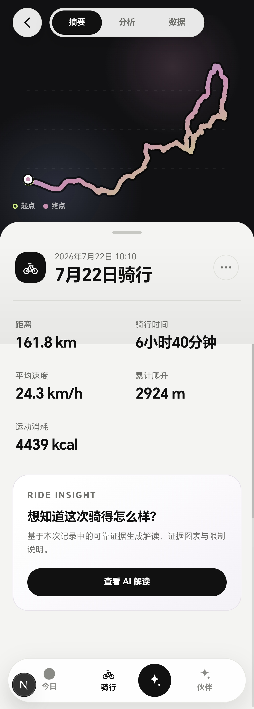
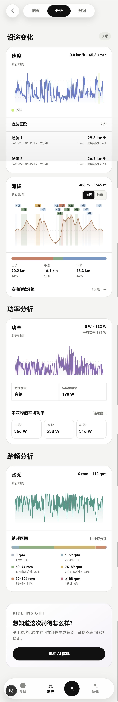
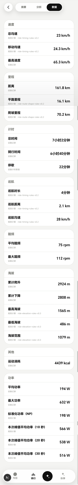
6.2 状态设计
AI 生成的完整状态机：入口卡片 → 生成状态页（4 步真实步骤）→ 完成解读（结论 → 证据 → 正文 → 维度 → 限制与下一步）。降级状态的用户表达：AI 失败时展示 B0 确定性事实报告，附原因与重试入口，绝不展示半成品结论。partial 语义：部分数据缺失用「部分数据，仅供参考」轻量标记，而非静默省略或误导。
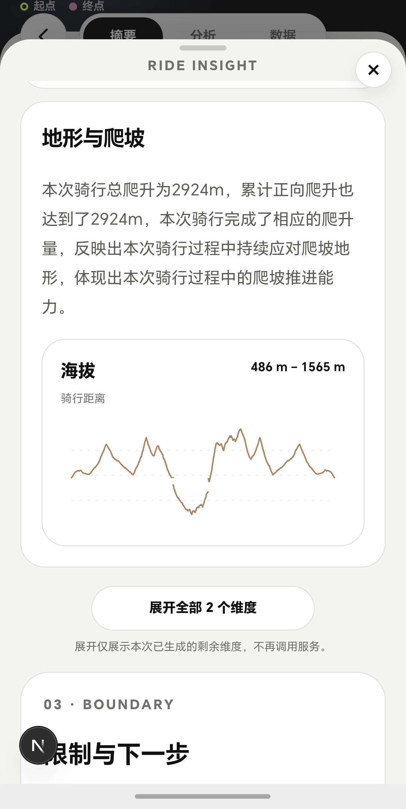
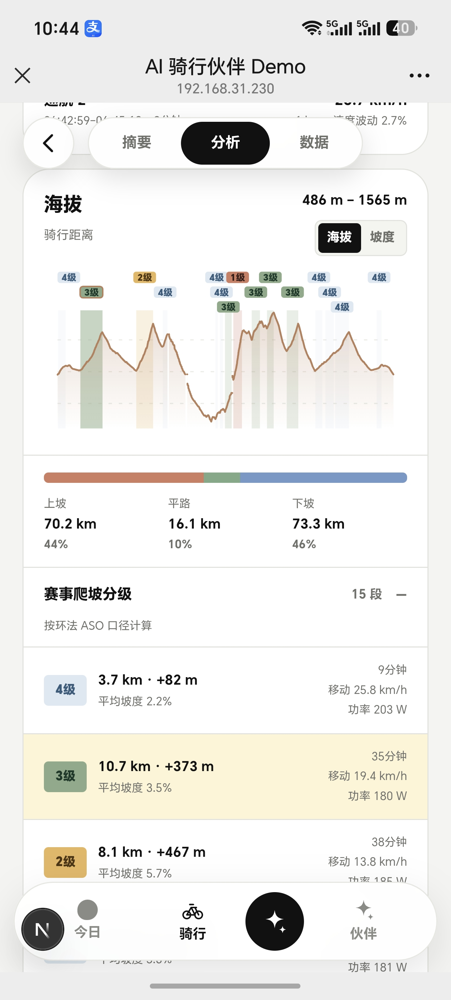
6.3 可访问性
- 不只靠颜色——所有区间、图例、状态均配文字 / 纹理提示，支持键盘 / 触控访问。
- 图表-文字双向联动——点击曲线区段 / 标签定位到对应时间窗并高亮关联 Claim；文字引用反向滚动到图表证据——让"结论"和"证据"始终可互查。
- 无障碍文本不引入 Claim 之外的新数字。
6.4 移动端适配
- 移动端优先，单列主阅读流，稳定纵横比。
- 图表允许横向拖动查看但不拉伸、不横向溢出。
- 重点检查尺寸：390×844、768px、1280px 三视口。
- AI 解读采用底部 sheet / 桌面 modal 的响应式容器，重开秒开（会话缓存 19ms 命中）。
6.5 设计原则小结
结论先于证据；事实可追溯；信息密度优先于装饰；颜色永远有文字补充。
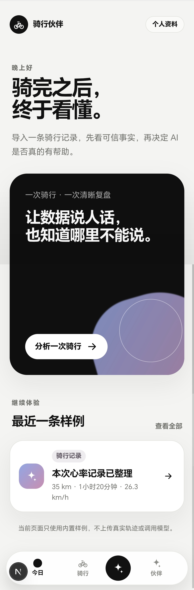
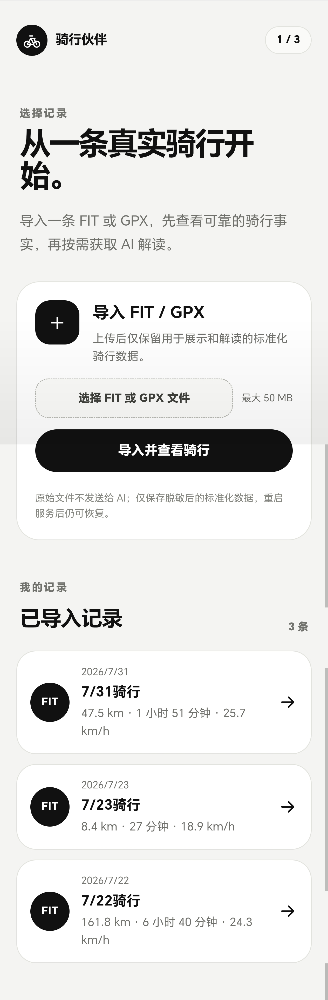
结果与复盘
7.1 量化结果汇总
本项目交付的不是"一个能跑的 Demo"，而是一套有工程证据、有质量门、有测评结论的完整体系。
| 维度 | 结果 | 备注 |
|---|---|---|
| 工程底座 | FIT/GPX 解析 + 18 项原子能力 + 20 个特征 + 三类 Claim 白名单 | 460 项回归测试全绿 |
| 产品闭环 | M1 骑后解读 + 数据看板 · M3 对话 Agent 15/15 任务全验收 | 里程碑收口 |
| AI 质量 | 81 槽正式门 · 分类器 38/38 · M3 27/27 | 详见 05 章 |
| 用户体感 | 会话缓存 19ms 命中 · 默认 3 维度秒开 | 实测数据 |
7.2 关键决策复盘（3 个最有代表性的）
① 为什么不设「骑行水平总分」
单次均速 / 里程 / 爬升受路线、风、体重、停歇强干扰，会误导用户。改为多维能力画像，且单次与长期严格分离。
② 为什么放弃纯规则路由
正则没有语境、宽词相互吞噬。升级为混合意图路由（规则红线 + 小模型分类 + 自主工具循环）——从"能用"到"能用好"。
③ 为什么 B0-first
AI 是可降级的增强而非核心——保证任何 AI 失败用户都有确定性事实兜底。AI 不在时，系统依然完整可用。
7.3 不足与反思
- 盲评 NO-GO——事实忠实不足，洞察性偏低。定位为规则口径问题（前置数据规则过严，可用 Claim 缺失近 50%），修复循环暂停；不是方向错误。
- 性能——同步 Provider 25 秒，未达 8 秒 P95 目标，成本不可观测。需引入流式响应 + 成本埋点。
- 数据持久化——本地文件仓储，未接生产 PostgreSQL。需迁移 + 数据迁移工具链。
7.4 下一步展望
- M2：社交分享导出（图片 / 系统分享）+ 持久化迁移。
- M4：骑行水平评估（能力画像，设计已完成
AI-CAP-01Review）+ 入门训练计划（需专业审核）。 - 生产化：OIDC 接入、成本可观测、模型对照选择、码表数据自动拉取。
附录
技术栈
Next.js 16 · React 19 · TypeScript · Coze Workflow · 确定性规则引擎 · SQLite（本地）
关键设计文档
- PRD · AI 骑行伙伴 v1
- 技术方案 · AI 骑行伙伴 v1
- Agent 架构设计
- 骑后解读规则重构设计
- 骑行水平能力评估模块设计
- 骑行高阶指标与可视化规则草案
- AI_AGENT 测评计划与记录
- VIBE_CODING 开发规划
链接
作品详情 · 设计与实现 © 2026 李伊柠